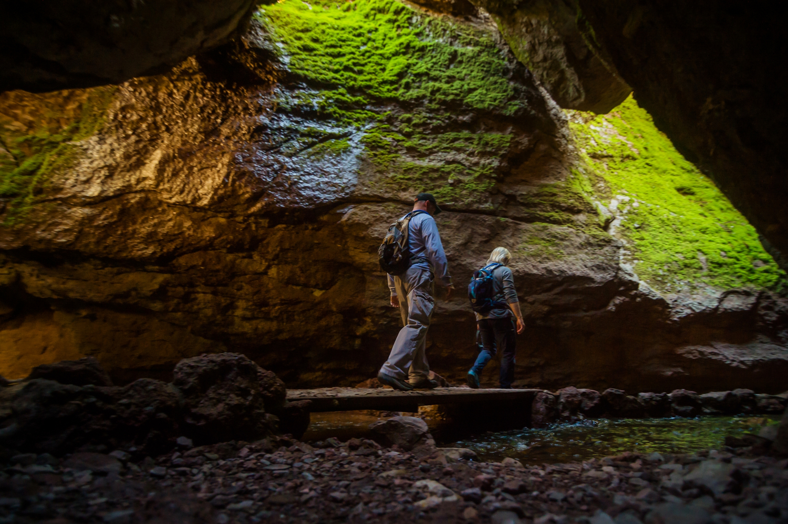

Pinacle National Park is an amazing place to visit with kids.
It is
such an underrated gem!
You must be stunned by the massive rock
spires and jagged peaks!
Moses Spring to Rim Trail Loop
Distance: 2.2 miles round trip, 1
to 1-1/2 hours
Elevation: 500 feet
Difficulty: Moderate
A perfect choice for families, this loop offers the quintessential
Pinnacles experience with impressive rock formations, caves, and a
serene reservoir. The trail is short yet packed with diverse landscapes
and fun for all ages.